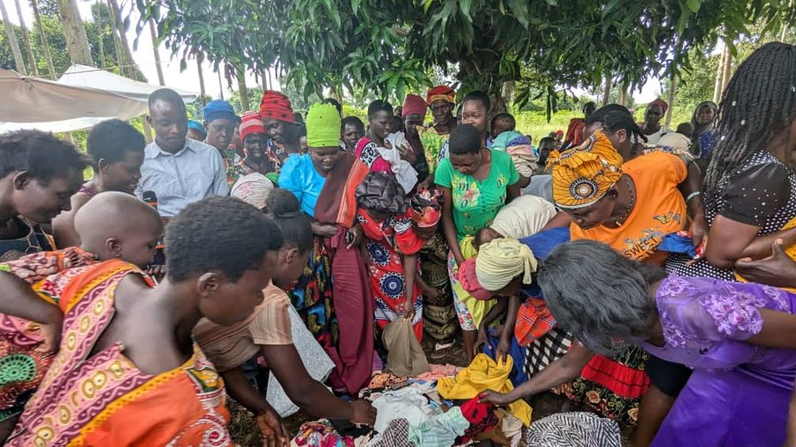
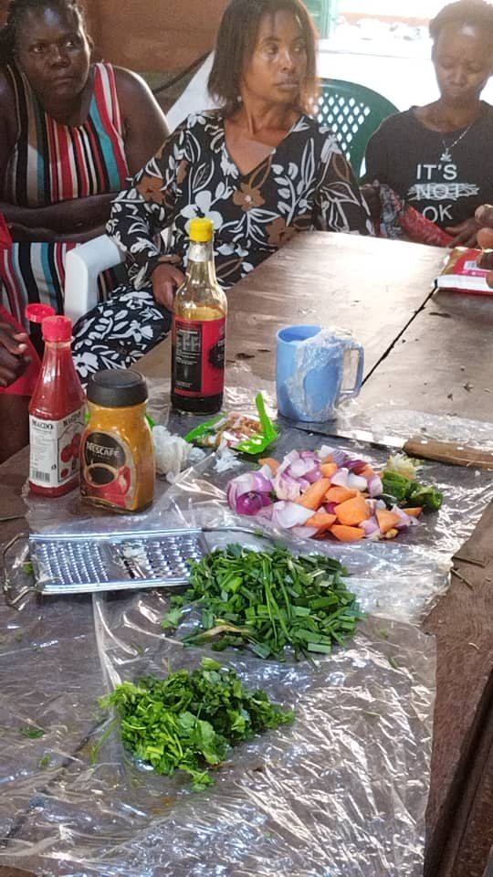
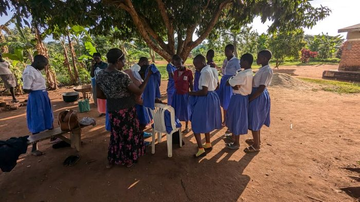
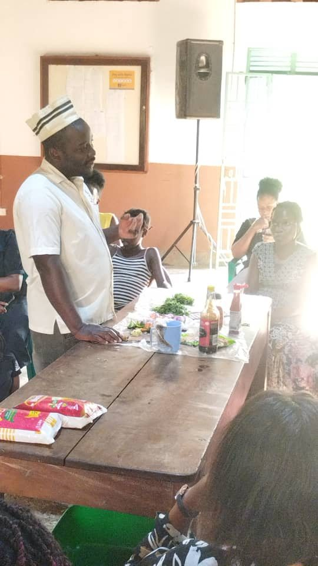
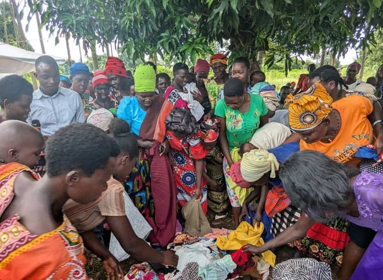
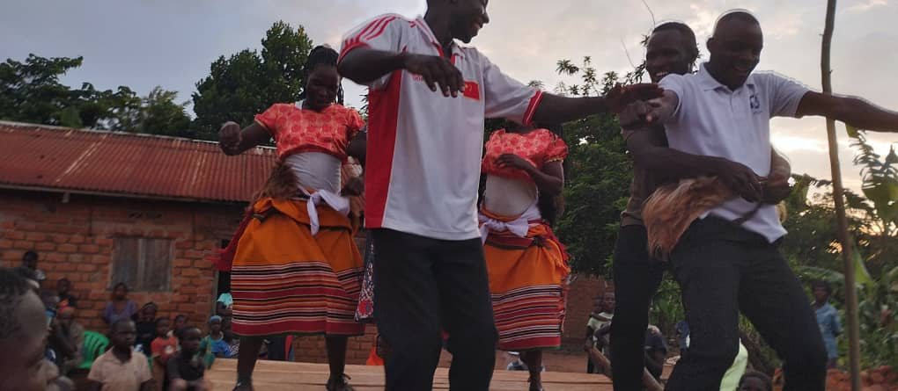
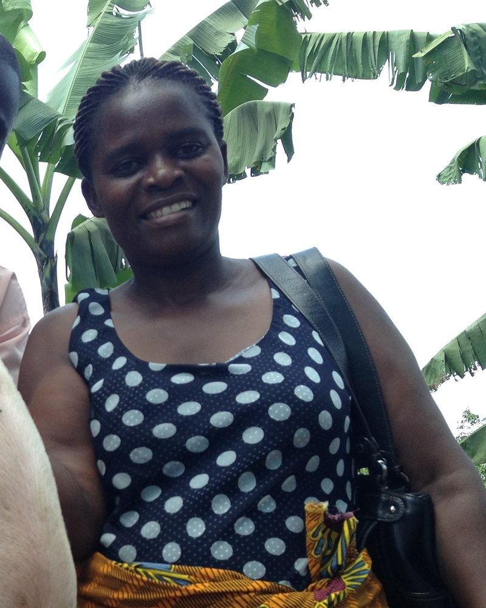
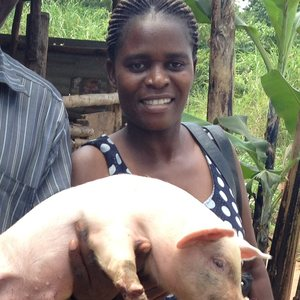
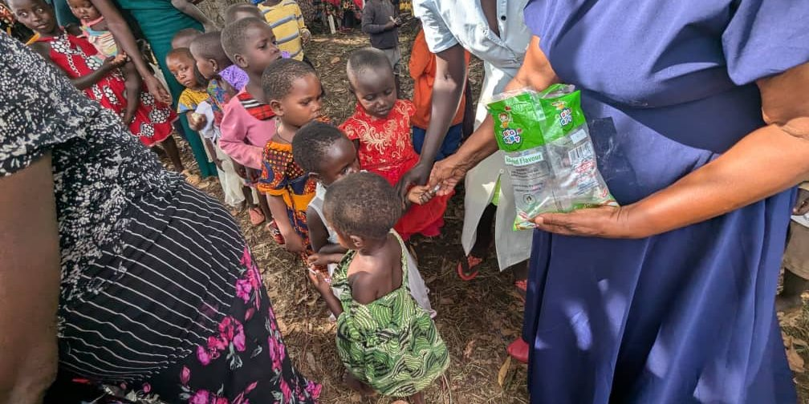

Join us at a Turikumwe community day.
Watch the dance troupe rehearse, sit in on a skills training class, or join a home-visit day with our outreach team — see the work firsthand.
Plan a Visit→We stand beside women rebuilding their lives — teaching skills that pay the bills, protecting dignity and health, and letting children's laughter and dance lead the way to hope.
Turikumwe means "we are together." We started in Kasangati with a simple belief: lasting change for women happens when love meets a marketable skill. Today we walk with women through vocational training, health support and safety — while their children find rhythm, confidence and joy in our dance troupe.



From the kitchen to the classroom, from the piggery pen to the dance floor — every program is a doorway to dignity.

Cooking, catering, piggery and liquid soap-making — practical trades that turn into steady income.
Explore this program
Free sanitary pads, menstrual health education and safe-space domestic violence awareness.
Explore this program
Mentorship, schooling support and a performance troupe that dances at events across the region.
Explore this program
Home visits, savings groups and humanitarian support that reach families where they are.
Explore this programFrom soap-making workshops to our children dancing at community fairs — follow our journey on social media and never miss an update.

Watch the dance troupe rehearse, sit in on a skills training class, or join a home-visit day with our outreach team — see the work firsthand.
Plan a Visit→
"Before Turikumwe, I had no way to feed my children. Now I run my own soap-making stall, my daughters have pads at school, and every festival I watch my son dance with the troupe — proud, safe, and full of hope."


There are many meaningful ways to get involved — every action counts.
Sponsor a skill kit, fund a term of pads, or give monthly. Every shilling turns a skill into a livelihood.
Donate Now→Teach a skill, chaperone the dance troupe, or run a workshop. We're always looking for hands-on help.
Get Involved→Help us spread the word. Stay connected and amplify our message to reach more people in Kasangati and beyond.